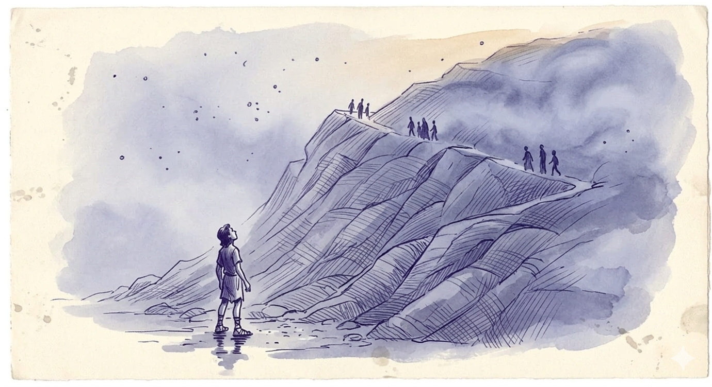

A man falls back asleep smiling, thinking of someone new. He dreams he’s climbing a hill in sandals after a shower, struggling to reach a place that should be his. Groups pass him—some try to help. He gives up. He mutters:
Words he recognizes as his former wife’s — a simple phrase meaning “it hurts, it hurts too much” — spoken in his mother tongue, from the separation. He becomes lucid—not to reshape the dream, but to leave it. He chooses to wake up.
